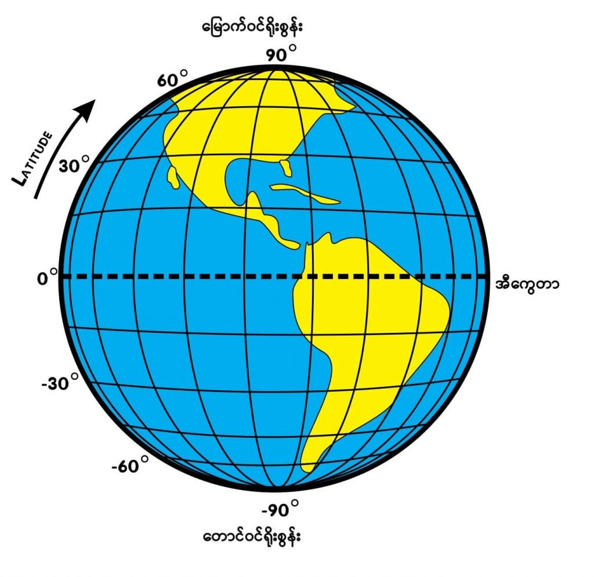
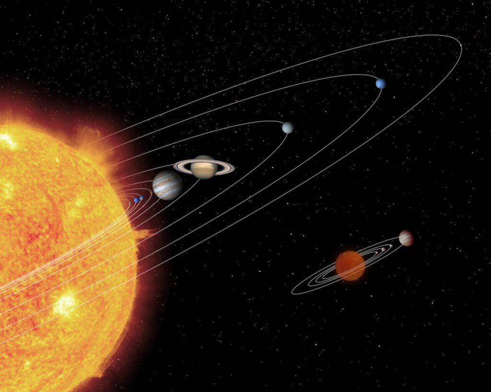

ဒါဆို ကမ္ဘာကြီးက ဘယ်လောက် အမြန်နှုန်းနဲ့ ရွေ့လျားနေတာလဲ။
ရှေးခေတ် နက္ခတ် ပညာရှင် အများစုက ကမ္ဘာဟာ စကြာဝဠာရဲ့ ဗဟိုချက် ဖြစ်တယ်လို့ ယုံကြည် ယူဆခဲ့ ကြပါတယ်။ သူတို့က ကမ္ဘာမြေကြီးဟာ ငြိမ်သက်နေပြီး နေ၊ လ၊ ဂြိုလ်တွေနဲ့ ကြယ်တာယာတွေ အားလုံးဟာ ကမ္ဘာကို လှည့်ပတ်နေ ကြတယ်လို့ ယုံကြည်ခဲ့ကြတာပါ။ဒီရှေးဟောင်း နက္ခတ် ပညာရှင်တွေရဲ့ အလိုအရ နေက ကမ္ဘာကို ပတ်နေတာကြောင့် နေထွက် နေဝင် ဖြစ်ပြီး နေ့နဲ့ည ဖြစ်လာရတာလို့ ယူဆကြပါတယ်။ ဒီလိုပဲ လကလဲ ကမ္ဘာကို ၂၄ နာရီ တစ်ကြိမ် ပတ်နေတယ်၊ ဂြိုလ်တွေ၊ ကြယ်တွေ ကလဲ ကမ္ဘာကို ၂၄ နာရီ တစ်ကြိမ် ပတ်နေကြတယ်လို့ ယူဆခဲ့ ကြပါတယ်။
ဒီနေရာမှာ ပြဿနာကတော့ ကောင်းကင်က နေ၊ လ နဲ့ ဂြိုလ်တွေ ကြယ်တွေ သွားလာနေကြ တာတိုင်းဟာ အပေါ်က ယူဆခဲ့တဲ့ စကြာဝဠာကြီးက ကမ္ဘာကို ပတ်နေတယ် ဆိုတဲ့ အမြင်နဲ့ အကုန်လုံး ဖြေရှင်းချက် မပေးနိုင်တာပဲ ဖြစ်ပါတယ်။ ဥပမာ တခါတလေ ကောင်းကင်က ဂြိုလ်တချို့ဟာ ရှေ့သွားနေရာက ရုတ်တရက် နောက်နဲနဲ ဆုတ်ပြီးမှ ရှေ့ဆက် သွားတာမျိုး မြင်ရတဲ့ အခါ ဘယ်လို ဖြေရှင်းချက် ပေးရမှန် မသိ ဖြစ်ကုန်ကြပါတယ်။
အင်္ဂါဂြိုလ် ဟာ နေကို ကမ္ဘာထက် ဝေးတဲ့ နေရာကနေ ပတ်နေတာ ဖြစ်ပါတယ်။ ဒီတော့ အင်္ဂါဂြိုလ်ရဲ့ နေကို ပတ်တဲ့ နှုန်းက ကမ္ဘာထက် နှေးနေပါတယ်။ တခါတရံ ကမ္ဘာက အင်္ဂါဂြိုလ်နား ကပ်သွားပြီး ကျော်တက်သွားပါတယ်။ ဒီလို ကျော်တက်သွားတဲ့ အချိန်မျိုးမှာ ကမ္ဘာကနေ အင်္ဂါဂြိုလ်ကို ကြည့်ရင် နောက်ပြန်ဆုတ်သွား သလိုမျိုး မြင်ကြရမှာ ဖြစ်ပါတယ်။ ကျွန်တော်တို့က ကျော်တက်သွားပြီးမှာ အင်္ဂါဂြိုလ်ဟာ မူလလမ်းကြောင်း အတိုင်း ဆက်သွားတာကို ပြန်မြင်ကြရမှာပါ။
နောက်ပြီး ကမ္ဘာဟာ စကြာဝဠာရဲ့ ဗဟိုချက် မဟုတ်ဘူး ဆိုတာကို ရှေးခေတ် နက္ခတ် ပညာရှင်တွေ သံသယ ဖြစ်လာစေတဲ့ အခြားအကြောင်းတွေလဲ ရှိကြပါသေးတယ်။ ဒါကတော့ ကောင်းကင်က ကြယ်တွေရဲ့ တည်နေရာဟာ ကမ္ဘာပေါ်က ရာသီကို လိုက်ပြီး ပြောင်းတယ် ဆိုတာကို သတိထားမိ လာကြတာပါပဲ။ ဒါကို Parallax လို့ ခေါ်ပါတယ်။
ဒီ Parallax ကို အလွယ် ရှင်းပြရရင် သင့်ရှေ့မှာ လက်ကို ဆန့်တန်းပြီး လက်မထောင် ထားလိုက်ပါ။ ပြီးရင် ဘယ်ဖက် မျက်လုံးကို ပိတ်ပြီး ကြည့်။ နောက် ညာဖက် မျက်လုံးကို ပတ်ပြီးကြည့်ကြည့်။ ဒီအခါ လက်မရဲ့ အနေအထားက နောက်ခံ ပေါ်မှာ ပြောင်းသွားတာ တွေ့ရမှာပါ။
ကောင်းကင်က ကြယ်တွေလဲ ဒီလိုပါပဲ။ ကမ္ဘာက နေရဲ့ တဖက်ခြမ်းမှာ မြင်ရတဲ့ ကြယ်တွေရဲ့ တည်နေရာဟာ နောက် ၆ လ ကြာလို့ နောက်တဖက် ရောင်သွားတဲ့ အခါ နေရာ နဲနဲလေး ပြောင်းသွား တတ်ပါတယ်။ ဒါကို ရှေးက နက္ခတ် ပညာရှင်တွေ စတင်ပြီး သတိထားမိ လားကြပါတယ်။ ဘယ်မျက်လုံးနဲ့ ကြည့်တာနဲ့ ညာဖက် မျက်လုံးနဲ့ ကြည့်တာ မြင်ရတာချင်း ကွာခြား သလိုပေါ့ဗျာ။
ကမ္ဘာကဘယ်လောက်မြန်မြန်လည်နေလဲ
ကမ္ဘာက သူ့ဝင်ရိုးပေါ်မှာ ပုံမှန် အရှိန်နှုန်းနဲ့ လည်နေတာပါ။ တစ်ရက် (၂၄ နာရီကို) တစ်ပတ် လည်တာမို့ ဒီဂရီနဲ့ ပြောရရင် ၃၆၀ ဒီဂရီ ရှိပါတယ်။ ဒါပေမယ့် လည်တဲ့ အမြန်နှုန်းကတော့ သင် ကမ္ဘာရဲ့ ဘယ် လတ္တီတွတ် မှာ ရှိလဲ ဆိုတာပေါ် မူတည်ပါတယ်။လတ္တီတွတ် မျဉ်းဆိုတာက ကမ္ဘာ့ကို ပတ်ပြီး အရှေ့အနောက် ပတ်ပြီး ရေးဆွဲထားတဲ့ မျဉ်းတွေ ဖြစ်ပါတယ်။ ကြည့်လိုက်ရင် ကမ္ဘာကို ကွင်းတွေ ပတ်ထား သလိုမျိုးပေါ့။ ကမ္ဘာကြီးရဲ့ အလယ်နေရာ အဝဆုံး နေရာက ကွင်းကိုတော့ အီကွေတာ လို့ ခေါ်ပါတယ်။ သူနဲ့ အပြိုင် ကွင်းတွေကို တောင်ဖက်နဲ့ မြောက်ဖက်တွေမှာ ဆက်ပြီး ဆွဲထားပါတယ်။ ဒီကွင်းတွေဟာ အီကွေတာနဲ့ ဝေးသွားလေလေ သေးသွားလေလေ ဖြစ်ပါတယ်။

ဒါပေမယ့် အီကွေတာနဲ့ ဝေးတဲ့ နေရာက သူတစ်ယောက် အတွက်တော့ ဒီ့ထက်နှေးတဲ့ နှုန်းနဲ့ ကမ္ဘာကို ပတ်နေမှာ ဖြစ်ပါတယ် (သူရပ်နေတဲ့ လတ္တီတွတ် ကွင်းက သေးတာကိုး)။
ဥပမာ ပြောရရင် ရန်ကုန်မြို့ထဲမှာ နေနေတဲ့ လူတစ်ယောက် ဆိုပါစို့ဗျာ။ ရန်ကုန်မြို့က မြောက်လတ္တီတွတ် ၁၆.၈ ဒီဂရီ လောက်မှာ ရှိပါတယ်။ ရန်ကုန်မြို့ကို ဖြတ်သွားတဲ့ လတ္တီတွတ် မျဉ်းရဲ့ အဝန်း (circumference) က မိုင်ပေါင်း ၂၃,၈၁၂ မိုင်ခန့် ရှိပါတယ်။ ဒါ့ကြောင့် ရန်ကုန်က သူတစ်ဦး ကမ္ဘာကို ပတ်နေတဲ့ အရှိန်နှုန်းက တစ်နာရီကို ၉၉၂ မိုင် ရှိပါတယ်။
မန္တလေးမြို့က မြောက်လတ္တီတွတ် ၂၁.၉၆ ဒီဂရီမှာ ရှိပါတယ်။ သူက ပိုမြောက်ဖက် ရောက်တဲ့ အတွက် အရှိန်ကလဲ ပိုနှေးသွားပါတယ်။ မန္တလေးသား တစ်ယောက် အဖို့ကတော့ ကမ္ဘာပေါ်မှာ တစ်နာရီကို ၉၆၁ မိုင်နှုန်းနဲ့ လည်ပတ်နေမှာ ဖြစ်ပါတယ်။
မြောက်လတ္တီတွတ် ၂၇.၃၂ မှာ ရှိနေတဲ့ မြန်မာပြည် မြောက်ဖျားက ပူတာအိုက သူတစ်ယောက်ဆိုရင်တော့ တစ်နာရီကို ၉၂၁ မိုင်နှုန်းနဲ့ လှည့်ပတ်နေမှာ ဖြစ်ပါတယ်။
ကမ္ဘာ့ မြောက်ဝင်ရိုးစွန်း (သို့) တောင်ဝင်ရိုးစွန်းမှာ ရပ်နေသူ အဖို့ကတော့ ဘယ်ကိုမှ ရွေ့မသွားပဲ နေရာမှာတင် ပတ်ခြာလည်နေမှာ ဖြစ်ပါတယ်။
အီကွေတာ အရပ်မှာ လည်ပတ်နှုန်း အမြန်ဆုံး ဖြစ်တာဟာ အာကသထဲ ဂြိုလ်တု လွှတ်တင်တဲ့ နေရာမှာ အများကြီး အထောက်အကူ ဖြစ်စေပါတယ်။ အမေရိကန် က ဒုံးပျံတွေကို ဖလော်ရီဒါကနေ လွှတ်တင်တာဟာ အီကွေတာနဲ့ နီးလို့ ဖြစ်ပါတယ်။ ဒီလို အီကွေတာနဲ့ နီးတဲ့အတွက် ကမ္ဘာလည်တဲ့ လည်ပတ်နှုန်းရဲ့ အကူအညီ ရတာမို့ ဒုံးပျံတွေ ကမ္ဘာလေထုထဲကနေ ထွက်ခွာဖို့ အရှိန်ပိုရနိုင်လို့ ဖြစ်ပါတယ်။
ကမ္ဘာကရောနေကိုဘယ်အရှိန်နှုန်းနဲ့ပတ်နေလဲ
ကမ္ဘာလည်နေတာက အာကာသထဲမှာ ကမ္ဘာရဲ့ တခုတည်းသော ရွေ့လျားမှု မဟုတ်ပါဘူး။ ကျွန်တော်တို့ ကမ္ဘာဟာ နေကို တစ်နာရီကို မိုင်ပေါင်း ၆၇,၀၀၀ နှုန်းနဲ့ ပတ်နေတာပါ။ ဒါဟာ တစ်နေ့ကို မိုင်ပေါင်း ၁ သန်း ၆ သိန်း တောင် ခရီးသွားတာပါ။ တစ်နှစ် နေကို တစ်ပါတ်ပြည့်အောင် လည်ပတ်ဖို့ဆို ကမ္ဘာက မိုင်ပေါင်း ၅၈၄ သန်း ခရီးနှင် ရပါတယ်။
နေအဖွဲ့အစည်းကရောစကြာဝဠာထဲမှာခရီးသွားမနေဘူးလား
နေအဖွဲ့အစည်းကြီး တစ်ခုလုံးကလဲ မစ်ကီးဝေး ဂလက်ဆီ (Milky Way Galaxy) ကြီးထဲမှာ ခရီးသွားနေတာပါ။ ကျွန်တော်တို့ နေဟာ မစ်ကီးဝေး ဂလက်ဆီရဲ့ ဗဟိုကနေဆို အလင်းနှစ် ၂၅,၀၀၀ လောက် ဝေးပါတယ်။ မစ်ကီးဝေးကြီးက ဟိုဖက်ထိပ်ကနေ ဒီဖက်ထိပ်ထိ အချင်း အလင်းနှစ်ပေါင်း ၁၀၀,၀၀၀ လောက် ကျယ်ပါတယ်။ ဆိုလိုတာက ကျွန်တော်တို့က ဗဟိုကနေဆို အစွန်း မရောက်မီ တဝက်လောက်မှာ ရှိနေတာပါ။ ဒီ မစ်ကီးဝေးကြီးထဲမှာ ကျွန်တော်တို့ နေအဖွဲ့အစည်းကြီး တစ်ခုလုံးဟာ တစ်စက္ကန့်ကို ကီလိုမီတာ ၂၀၀ (မိုင် ၁၂၄ မိုင်) နှုန်းနဲ့ ခရီးသွားနေပါတယ်။ ဒါဟာ တစ်နာရီ ကီလိုမီတာ ၇၂၀,၀၀၀ (မိုင် ၄၄၈,၀၀၀) နှုန်းနဲ့ သွားနေတာပါ။ ဒီလောက် မြန်တဲ့ နှုန်းနဲ့ သွားတာတောင် ဒီ မစ်ကီးဝေးကြီးကို တပတ်ပတ်မိဖို့ဆို နှစ်ပေါင်း သန်း ၂၃၀ လောက် ကြာမှာ ဖြစ်ပါတယ်။တခါ ကျွန်တော်တို့ရဲ့ မစ်ကီးဝေး ဂလက်ဆီ ကြီးကလဲ စကြာဝဠာထဲမှာ ခရီးသွားနေတာပါ။ နောက် နှစ် သန်းပေါင်း ၄၀၀၀ လောက် (၄ ဘီလီယံ) ဆိုရင် ကျွန်တော်တို့ရဲ့ မစ်ကီးဝေး ဂလက်ဆီ ကြီးဟာ အင်ဒရိုမီဒါ ဂလက်ဆီ ကြီးနဲ့ ပေါင်းသွားမှာ ဖြစ်ပါတယ်။ ယခု အချိန်မှာတော့ ဒီ ဂလက်ဆီ နှစ်ခုဟာ တစ်ခုကို တစ်ခု တစ်စက္ကန့်ကို မိုင် ၇၀ နှုန်းနဲ့ ရွေ့လျားလို့ လာနေပါတယ်။